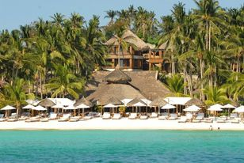

|
|

One thing travelers can be sure of when it comes to the island of Boracay in the Philippines: it’s going to be the same tropical paradise they love every time. Boracay Beach Resort understands this and envisions a return to the Boracay vacation that’s peaceful and gentle while still offering high-energy adventures and exciting nightlife.
Since opening in 2005, tourists have been raving about Boracay Beach Resort’s peaceful surroundings, well-appointed rooms, and outstanding service. It features 46 thoughtfully furnished lodgings, 6 cabanas, a beachfront bar and dining area, plus a roof deck with spectacular views.
Since opening in 2005, tourists have been raving about Boracay Beach Resort’s peaceful surroundings, well-appointed rooms, and outstanding service. It features 46 thoughtfully furnished lodgings, 6 cabanas, a beachfront bar and dining area, plus a roof deck with spectacular views.
Boracay Island was originally home to the Ati tribe. Boracay is part of Aklan Province, which became an independent province on April 25, 1956. Formerly undiscovered, it wasn't till the 1970s that tourism began to develop in Boracay, and the island became popular with backpackers in the 1980s.
Back to Top of page
|